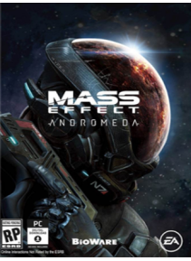

Mass Effect: Andromeda este un joc video de acţiune dezvoltat de BioWare şi publicat de Electronic Arts pentru PlayStation 4 , Xbox One şi Microsoft Windows . Jocul a fost lansat la nivel mondial martie 2017. Este a patra intrare generală în Mass Effect seria şi prima de Mass Effect 3 . Jocul începe în Calea Lactee în timpul secolului 22, în cazul în care umanitatea este de planificare pentru a popula lumi noi de origine în galaxia Andromeda , ca parte a unei strategii numita Iniţiativa Andromeda. Jucatorul îşi asumă rolul de Scott sau Sara Ryder, un recrut militar lipsit de experienţa, care se alatura iniţiativei şi se trezeşte în Andromeda în urma unei călătorii de 600 de ani.
Preţ : 48,24 €